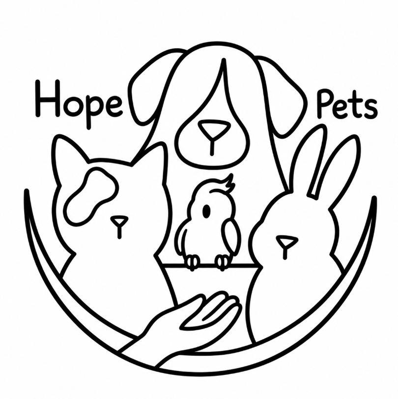

HTML5
Estructuración semántica y accesibilidad web.

Sofía | ADSO - SENA
Las tecnologías que he aprendido y que uso para construir HopePets.
Estructuración semántica y accesibilidad web.
Diseño responsivo, Grid, Flexbox y temas visuales.
Interactividad del DOM, validación y eventos dinámicos.
Lógica de programación y desarrollo backend/escritorio.
Diseño de esquemas y consultas relacionales.
Prototipado de interfaces UI/UX y diseño de logotipos.